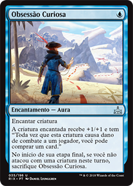
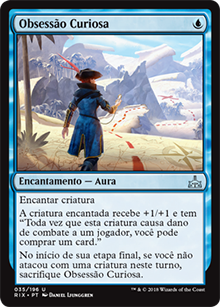
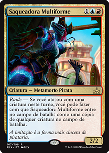
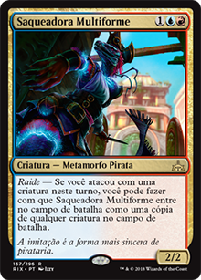
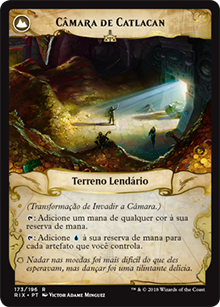
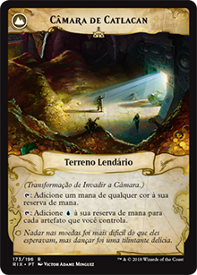

Os piratas são, na minha opinião, o melhor payoff para quem escolhe jogar com um deck tribal. Com uma boa diversidade de mecânicas e efeitos que esta tribo oferece, é possível montar estratégias consistentes de controle ou aggro, e quando combinados com outras edições podem resultar em um bom midrange. Uma das grandes vantagens de se jogar com os piratas é a possibilidade de popular o campo de batalha com criaturas que controlam ou favorecem o controle do jogo. É como ter duas cartas pelo custo de uma, o que abre bastante espaço para munir-se de outras mágicas.
 

Duas cartas que merecem um grande destaque são a Domador de Tempestades Sireno (U 1/1) e o Pirata de Aeroveleiro (1B 1/2), pois são criaturas que oferecem uma boa fonte de controle durante o early game, ao mesmo tempo que são criaturas evasivas (ambas possuem Voar) que podem atacar praticamente todo turno, sem grandes preocupações, criando um grande potencial para ativar efeitos como o da Adaga de Radioestesia ou Obsessão Curiosa, além de deixar o caminho livre para aproveitar efeitos de Raid - tudo isto sem perder a maestria de controlar o jogo do oponente.
Também é impossível falar de piratas e não mencionar a Tomadora de Reféns (2UB 2/3), outra grande arma da tribo dos piratas. Utilizada com o devido planejamento esta criatura é capaz de trazer grande vantagem sobre o oponente, principalmente se você tiver mana para usar o seu efeito antes dela ser alvo de algum removal. E as possibilidades vão além com cartas como Ardil da Sirena e e Soltar ao Vento, as quais te permitem executar uma manobra evasiva, e ao mesmo tempo ofensiva, pelo custo de 1U ou 2U e com instant speed.
Por fim, a estratégia do meu deck UBR é simples: utilizar as criaturas como controle e ofensa ao mesmo tempo, aumentando seu poder de ofensa conforme o jogo avança e controlando as manobras do oponente, levando-o à "exaustão". A mão inicial é de extrema importância para poder abrir a vantagem sobre o oponente o quanto antes, deixando o caminho mais livre para respostas à medida em que seu oponente tenta montar sua estratégia.
 

 

Para fechar, os piratas conseguem controlar uma boa base de mana de qualquer cor, já que existem muitas cartas que criam muitos tesouros que geram mana de qualquer cor, fazendo com que cartas com 3 custo de mana de cores diferentes não sejam tão difíceis de jogar, como por exemplo a Almirante Beckett Bronze, Saqueadora Multiforme, Invadir a Câmara/Câmara de Catlacan ou até mesmo cartas que não tem nada a ver com o deck, como brancas e verdes.
Igor Dantas